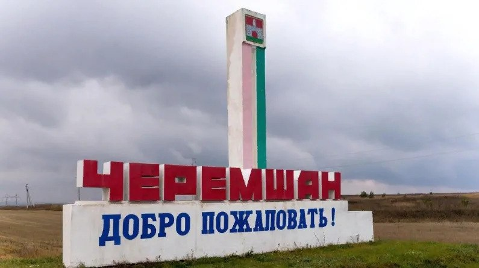

Черемша́нский райо́н (тат. Чирмешән районы) —
административно-территориальная
единица и муниципальное образование
(муниципальный район) в составе Республики
Татарстан Российской Федерации. Находится
на юго-востоке региона. Административный центр
— село Черемшан.
Население
Согласно итогам Всероссийской
переписи населения 2020 года
(из числа указавших национальность),
национальный состав района составляют
Татары — 53,3 %, русские — 21,5 %,
чуваши — 20,9 %, мордва — 2,9 %, представители
других национальностей — 1,4 %.